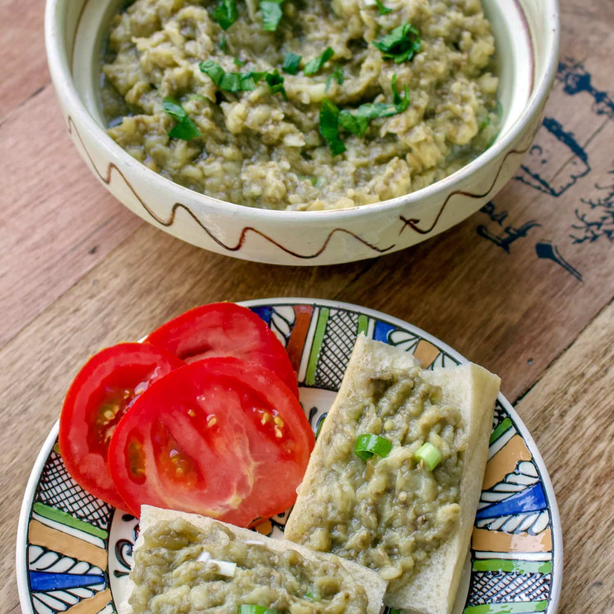

Many cuisines feature eggplant salads and appetizers. From the French caviar d'aubergine to the Iranian kashk bademjan, variants of the dish can be found throughout the world.

Few things are more delicious than eggplant salad...
Ingredients:
Eggplants
Onions
Sunflower oil
Lemon juice or vinegar
Salt
Steps:
Bring the temperature of the grill between medium-low to low. If it is too hot, the eggplants will burn on the outside before the inside is cooked.
Pierce the eggplants in few places and grill them on each side, turning them regularly until the skin is burned. Depending on their size, you should grill the eggplants somewhere between 20 to 40 minutes or until the skin is evenly charred and the eggplant collapses. The flesh should be really soft.
Let them cool, then carefully remove all the skin. Place the eggplants in a sieve and let drain for about half an hour to one hour. This step will remove the juice from the eggplant that is supposed to be bitter.
Chop with a special wooden/plastic knife made especially for this purpose or with a regular knife.
Place the eggplants in a bowl and add the sunflower oil, salt, lemon juice or vinegar, and chopped onion. Mix well.
Serve them on bread and, optionally, with tomatoes or feta cheese.